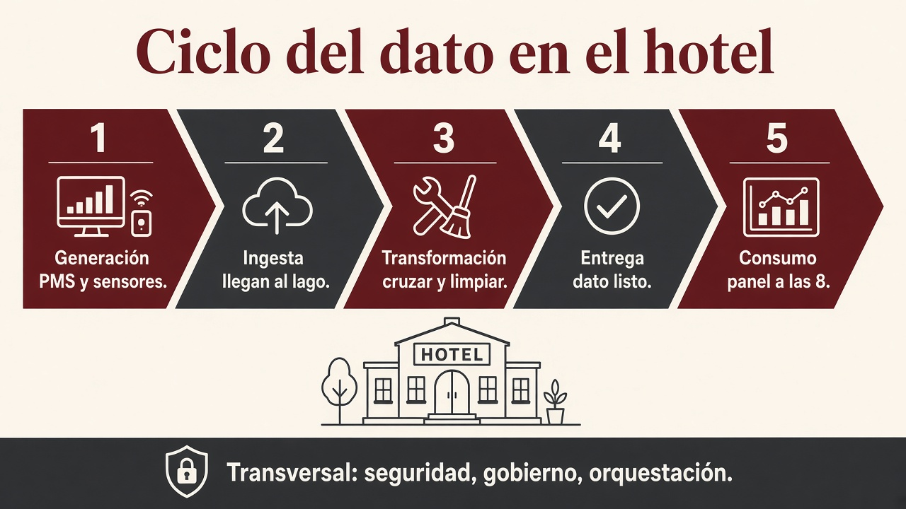
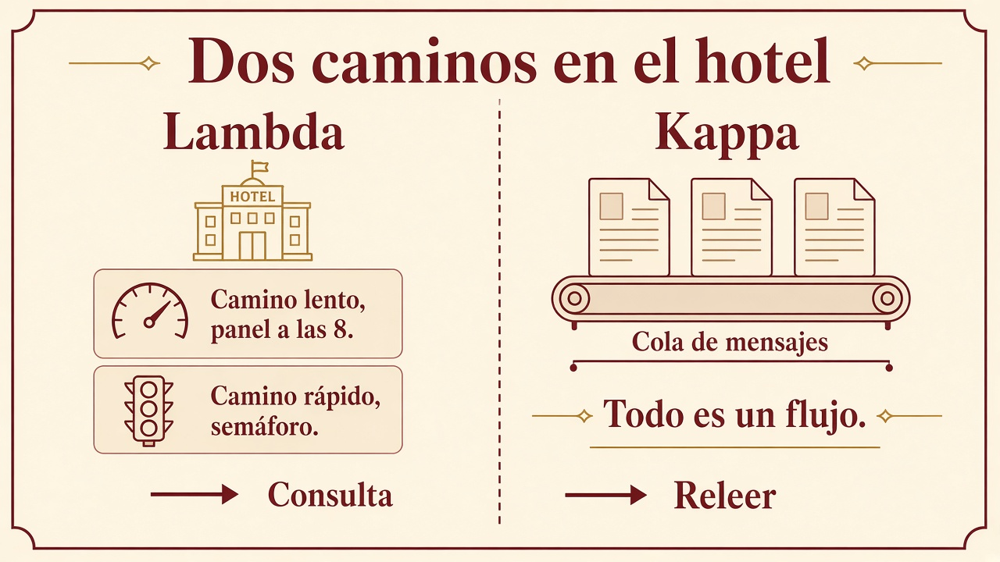
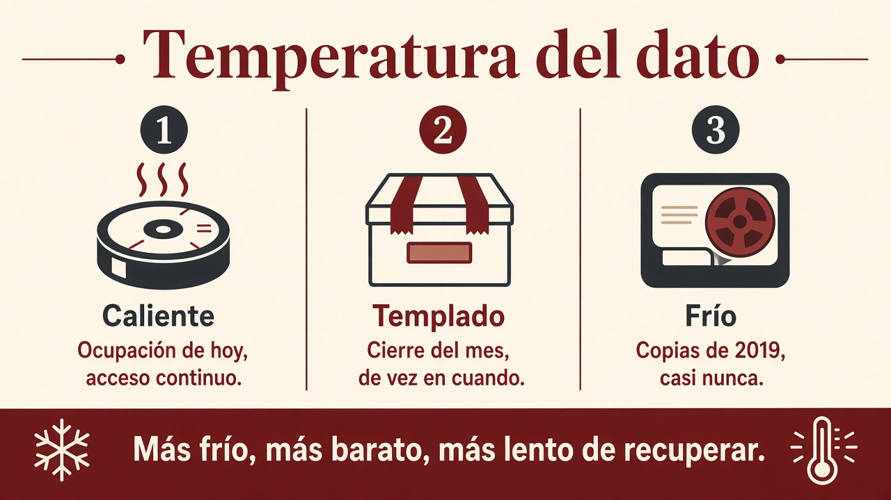

1.5. Arquitectura por capas y paisaje de herramientas¶
Un sistema Big Data no es “un programa que lo hace todo”. Si metes ingesta, limpieza, modelos y el PDF para gerencia en el mismo script, no puedes probar, ni sustituir una pieza, ni explicar el diseño (criterio a)).
Se parte en capas que se hablan entre sí. Cada capa tiene una responsabilidad. Así sabes dónde encajan la ingesta, el formato, Pentaho y el cuadro de mando.
Este apartado es también el mapa del oficio que en 1.1 llamamos ingeniería de datos: no el gráfico del lunes, sino que ese gráfico pueda hacerse.
El ciclo (generación → consumo)¶
Antes de los logos, el dato recorre un ciclo. Las tecnologías cambian; estas fases no.
- Generación. Quién, dónde y cuándo nace el dato: PMS, pasarela, sensor, un Excel de Comillas, una API.
- Ingesta. Moverlo al almacén. El detalle (pipeline, push/pull/poll, ETL/ELT) está en 1.6.
- Transformación. Cruzar, limpiar, agregar. Aquí vive Pentaho y, a escala, Spark SQL.
- Entrega (serving). El dato ya es de fiar y se lo das a un consumidor: panel, modelo, fichero para el científico.
- Consumo. Gerencia a las 8, un analista, un entrenamiento. Si el consumidor no confía, el ciclo ha fallado antes.

Sobre el almacén (lago, warehouse, lakehouse, cubo de objetos: 1.3) se apoyan ingesta, transformación y entrega. Lo que no es una fase, y atraviesa todas, va más abajo: seguridad, gobierno, orquestación.
A quién sirves¶
No es el mismo reloj.
| Entrega | Pregunta | Reloj en el hotel |
|---|---|---|
| Analítica de negocio | ¿Qué pasó / por qué? Decisiones de días o semanas. | El panel de las 8 (lote). |
| Analítica operacional | ¿Qué hago ahora? | El semáforo de recepción (sensores). |
| Analítica embebida | El dato vive dentro de otra app. | “¿Queda doble al mar?” en la web de reservas. |
A veces el resultado vuelve al origen: el modelo etiqueta bien una cancelación y escribes el hecho otra vez en el PMS. Eso se llama reverse ETL. No lo montáis en este módulo; sí sabéis que el ciclo no es de un solo sentido.
Un caso para no perderse¶
El hilo del módulo es el grupo hotelero. En estas capas se usa otro negocio, para que no parezcan un invento solo de reservas.
Una comercializadora eléctrica (o un ayuntamiento con contadores) quiere:
- no perder lecturas de los equipos,
- detectar un consumo anómalo,
- y que dirección vea un panel el lunes.
Ese problema no se resuelve con una única base Access. Recorre las capas. Son el mismo ciclo de arriba, vistos como edificio.
Las capas (el dato entra abajo y el cliente mira arriba)¶
1. Ingesta¶
Entras a las fuentes que ya existen: la BD de facturación, una API del fabricante, un CSV que manda un contratista, un topic de sensores. Tú no eliges cómo habla el origen: te adaptas (SQL, HTTP, fichero, cola).
Si esta capa falla, el resto analiza el vacío.
2. Colección / integración¶
Unificas formato y semántica. El mismo cliente no puede llamarse id_cliente en un sitio y customerId en otro sin un criterio. Aquí nace (o se rompe) la calidad.
3. Almacenamiento¶
Lago, warehouse, lakehouse, HDFS, objeto en cloud… distribuido si el volumen lo pide. Aquí aplicas lo de 1.3: ¿el negocio puede verse a medias o no? ¿lago, almacén de informes o los dos?
4. Procesamiento¶
Infraestructura batch, streaming o híbrida. No extrae valor ella sola: deja el dato listo (agregado, limpio, unido). Spark, un job de Pentaho o un script viven aquí.
5. Consulta y analítica¶
SQL, notebooks, modelos. Aquí sale conocimiento: “esta ruta de lecturas es anómala”.
6. Visualización¶
Informes y cuadros de mando para el cliente final. Es el criterio e): fácil de interpretar. Un .ktr o un Parquet crudo no son esta capa.
7. Seguridad (transversal)¶
Atraviesa todas las anteriores: quién lee el NIF, cifrado, copias, amenazas internas (un práctico con más permisos de la cuenta) y externas. Principio de menor privilegio: solo el tiempo y las columnas que hacen falta. Enmascarar el DNI del huésped no es un adorno.
8. Monitorización (transversal)¶
¿El job de anoche acabó? ¿El dato del panel es de hoy o de marzo? Auditoría y gobierno. Sin esto, el prototipo de clase funciona y el de producción miente sin que nadie lo sepa.
Las dos que se olvidan en el trabajo de clase
Seguridad y monitorización. El flujo “CSV → filtro → Excel” llega al 10. Las otras seis capas, si el caso es real, también existen aunque sean simples (una carpeta con permisos y un log de Pentaho).
Qué tiene que cumplir el edificio¶
Las capas de arriba son el edificio. Una arquitectura Big Data, además, tiene que aguantar volumen y velocidad. En el grupo hotelero:
| Exigencia | En castellano | En el hotel |
|---|---|---|
| Escala | Añades disco o CPU sin rediseñar | Abrís Noja y el panel de las 8 sigue saliendo |
| Aguanta fallos | Un nodo muerto no tumba el servicio | Se funde un disco en Potes; recepción cobra |
| Dato repartido | Nada de un único SPOF (un solo punto que, si cae, cae todo) | No un USB con “el histórico” |
| Proceso repartido | El cálculo también se parte | El job de ocupación no corre en un portátil |
| Dato cerca del cálculo | Menos red, menos espera | Hadoop clásico; en nube a veces se separa (1.2, 1.3) |
Sobreingeniería
Montar Kafka + Spark + tres nubes “porque es Big Data” cuando el Excel de Comillas cabe en un PC. Primero la pregunta de gerencia; luego el edificio. Los proveedores publican listas (p. ej. Well-Architected): la idea es la misma, no hace falta recitar la guía.
Principios que evitan el zoo:
- Componentes comunes pocos y bien elegidos: cubo de objetos, Git, orquestador, un motor de proceso.
- Todo falla. Decide cuánto puedes tardar en recuperar el panel (RTO) y cuántas horas de reservas puedes perder (RPO).
- Elástico, también hacia abajo (apagar el clúster de madrugada).
- Viva: el negocio cambia; la arquitectura también.
- Poco acoplada: cola o API; cambias NiFi por un script sin reescribir el PMS.
- Reversible: una decisión mala se deshace (versión del job, no “ya está en producción para siempre”).
- Menos privilegio: el práctico no lee el DNI (seguridad).
Dos caminos: lote y flujo (Lambda y Kappa)¶
Lote y streaming ya están en 1.4. Aquí es cómo se combinan en el edificio.
- Lote: tiene principio y fin. El cierre de las 23:00. Preciso; tarda.
- Flujo: no acaba. Cada evento de sensor. Rápido; a menudo menos preciso (una ventana, no todo el histórico).
“Tiempo real” no es instantáneo: es responder en un plazo finito y útil. El semáforo de recepción sí; el panel de las 8 no hace falta.
Lambda: los dos a la vez¶
Cada hecho nuevo (reserva, cobro, sensor) entra por dos caminos que luego se consultan juntos:
- Capa lenta (lote). El lago inmutable: se añade, no se pisa. Por la noche recorres todo y calculas la vista del panel (ocupación e importe cerrados). Precisión alta; latencia de horas.
- Capa rápida (flujo). Solo el incremento desde el último lote: el semáforo, la ocupación “de ahora”. Baja latencia; puedes muestrear o mirar diez segundos de cada minuto.
- Capa de consulta. Gerencia pregunta. Si quiere el cierre de ayer, la vista lenta. Si recepción pregunta “¿queda doble?”, la rápida. A veces mezclas: ayer cerrado + lo de esta noche hasta las 7:50.
El linaje se conserva porque no reescribes: una cancelación es otro registro, no un borrado silencioso.
En el hotel eso es natural: no es el mismo algoritmo pintar el panel de las 8 (todo el día, todas las fuentes) y actualizar el semáforo (un evento).
Kappa: un solo flujo¶
Si el lote no es más que “un flujo que se puede releer”, tiras la capa lenta. Todo pasa por una cola de mensajes (Kafka y similares). El bruto no se muta; si cambias la transformación, reprocesas desde un punto (el replay).
Cuatro ideas:
- Todo es un flujo (el lote es un caso).
- El origen no se pisa.
- Un solo código que mantener.
- Puedes volver a lanzar el proceso sobre los mismos eventos.
Hace falta que los eventos se guarden en orden. Si el algoritmo del panel no es el del semáforo (p. ej. un modelo de cancelación sobre tres años de Parquet), Kappa se queda corto: ese entrenamiento quiere el camino lento.

| Pregunta | Te inclinas a |
|---|---|
| ¿El cálculo del panel y el del semáforo son el mismo (o casi)? | Kappa (un código, una cola) |
| ¿El modelo de cancelación necesita todo el histórico y el semáforo no? | Lambda |
| ¿Solo el panel de las 8, sin semáforo? | Un lote. No montes flujo “por si acaso” |
| ¿Solo el semáforo, y el 8 se puede rehacer releyendo la cola? | Kappa |
Spark se cita tanto porque el mismo código puede cubrir lote y flujo: en Lambda reduce el doble mantenimiento. El detalle del motor, en la UT2.
Temperatura: no todo el dato se toca igual¶

| Caliente | Templado | Frío | |
|---|---|---|---|
| Se consulta | Sin parar | De vez en cuando | Casi nunca |
| Disco típico | RAM / SSD | Cubo “normal” | Cinta, archivo barato |
| En el hotel | Semáforo, caché de “¿queda habitación?” | Cierre del mes | Copias de 2019 |
| Recuperar | Barato en tiempo, caro en € | Equilibrio | Barato guardar, lento sacar |
El camino rápido de Lambda vive en caliente. El histórico del lote, de templado a frío. Pagar SSD por las fotos de la reforma de 2019 es mal diseño.
El principio SCV (velocidad / precisión / volumen del cálculo) explica el trueque: el semáforo (S + V) no usa todas las filas; el panel de las 8 (C + V) no es instantáneo. No lo confundas con CAP (1.3).
Gobierno, DataOps y orquestación¶
No son una novena capa con logo. Son corrientes que atraviesan el ciclo.
Gobierno del dato. Que se pueda encontrar, saber de dónde salió (linaje) y qué significa canal. Metadatos, catálogo, ética y privacidad (el NIF no se va a un cubo público). Sin esto el lago es ciénaga (1.3).
DataOps. Entregar valor antes, con menos error: automatizar el job, observar cuando el CSV llega vacío, y tener un plan si Kitchen falla a las 02:10 (repetir, o volver a la versión de ayer). CI/CD aquí es “el flujo se prueba antes de pintar el panel”.
Orquestación. Quién dispara qué, en qué orden, y qué pasa si un paso muere. En aula lo veréis como Kitchen (1.8). En industria oiréis Apache Airflow: no transforma el dato; coordina. Un ingeniero de datos sin orquestación es un cron a ciegas.
Cómo se lee un paisaje (Big Data landscape)¶
Si buscas esa expresión verás pósters con cientos de logos. No los memorices. Sitúa la capa (o la fase del ciclo):
| Capa | Ejemplos que veréis en el ciclo | Pregunta que responde |
|---|---|---|
| Ingesta / mensajería | Sqoop, Flume, NiFi, Kafka, Kinesis | ¿Cómo entra el dato? |
| Almacén | HDFS, S3, warehouses cloud, MongoDB, HBase | ¿Dónde reposa? |
| Proceso | MapReduce, Spark, Hive, Pig | ¿Quién transforma a escala? |
| Orquestación | Oozie, Airflow, Kitchen (Pentaho) | ¿En qué orden y qué pasa si falla? |
| Visualización | Power BI, Tableau, informes Pentaho | ¿Qué ve el cliente? |
Hadoop fue la plataforma pionera de lotes sobre HDFS (un sistema de ficheros repartido). Spark cubre lotes y streaming en memoria y convive con ese ecosistema: por eso aparece en las dos capas de Lambda. Pentaho se usa en este módulo para ETL visual y para mostrar el resultado sin programar el motor. La cola de Kappa suele ser Kafka; el detalle de ingesta está en 1.6.
Los mapas cambian de año (nace una marca, muere otra). Las capas no. Un mapa reciente que se cita en el ciclo: MAD landscape (orientación, no para recitar).
Big Data y cloud¶
El BOE cita cloud. Un bucket S3 o un Glue no cambian el razonamiento: sigues decidiendo las 5 V, dónde vive el dato, lote o stream y el formato. Cambia quién opera los discos y cómo pagas. El cubo es almacén de objetos; el clúster de cálculo puede no vivir en las mismas máquinas (1.3).
En varios servicios analíticos de nube pagas por dato escaneado, no solo por dato guardado. Por eso en 1.7 Parquet no es “un capricho moderno”: es menos euros y menos minutos.
Destrezas del oficio (no un tutorial)¶
No hace falta dominarlas todas el primer día. Sí conviene saber que existen y para qué las usa un ingeniero:
- Linux / consola, SSH y redes (entrar en el nodo).
- APIs REST (traer un origen que no es un CSV).
- Git (el job también es código).
- Contenedores (Docker): levantar una herramienta sin pelearte con el Windows del aula.
- SQL (lingua franca de la transformación) y un lenguaje de scripts (en clase, Python).
- Un cuaderno Jupyter para probar; a producción, el mismo flujo en un orquestador.
Un ingeniero de datos no es un desarrollador de producto. Sí escribe el script que evita el clic manual a las 02:00.
Al terminar 1.5
Coge un caso (contadores, reservas, tickets de caja) y dibuja las ocho capas. Pon una herramienta o responsabilidad en cada una y justifica la de almacenamiento. Di si el caso pide Lambda, Kappa o solo lote. Si puedes explicarlo a un compañero que no ha leído el tema, el apartado está entendido.
Actividad¶
No puntúa en Moodle.
-
Sitúa cada herramienta en una fase o corriente (generación / ingesta / almacén / transformación / entrega / consumo / orquestación). Una línea de por qué.
Herramienta Pista Power BI Lo que gerencia ve SQL Lingua franca MongoDB Dónde reposa un JSON Airflow Orden de los pasos S3 Cubo de objetos -
En Lambda, ¿cómo va más rápido el semáforo que el panel de las 8? ¿Qué pagas a cambio? (Precisión / ventana / histórico.)
- Lote frente a flujo: una frase de volumen y otra de reloj, con el cierre de las 23:00 y los sensores.
- ¿Por qué oiréis tanto Spark en este dibujo, y no “un programa para el lote y otro para el flujo”?
- Los sensores de Potes disparan a saco. Según el SCV, si quieres velocidad y volumen, ¿qué sueltas?
Comprobación (1): consumo / transformación / almacén / orquestación / objetos. (2) Camino rápido = incremento o muestra, no todo el lago. (3) Lote = mucho dato, fin; flujo = continuo, ventana. (4) Un motor, dos modos. (5) Precisión (muestreo). Luego dibuja las ocho capas del hotel o de los contadores y marca Lambda o Kappa.